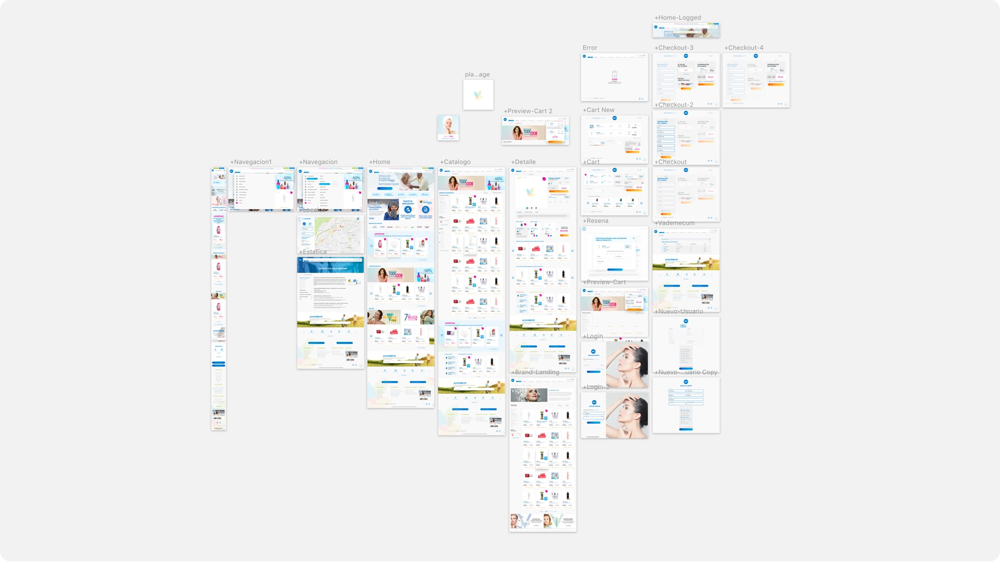
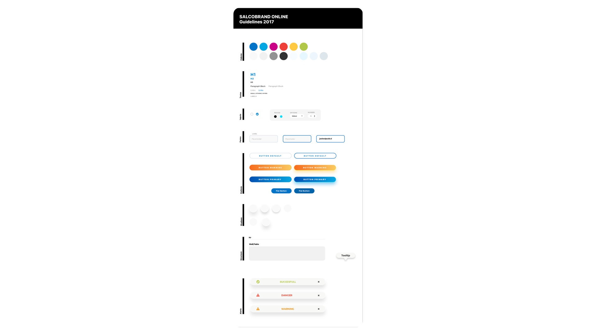

Salcobrand E-Commerce
Lead Designer | UX | UI | Data Driven Design
Salcobrand its a Chilean Drugstore, one of the most biggest around the country. In this time, i had have to re-design their site and actualize the user experience to a new fresh and intuitive one. Data Driven Design was an important process i had have to conclude. Analyse all the previous data and make a new Design based on hipothesis that were validated with recurrent users of the Salcobrand.cl site. Was a very intresting project and its on Production now on.
- User Experience Design
- User Interface Design
- Website
- Data Driven Design
- Continuous Improvement UX
A trend, intuitive and beautiful online drugstore

After weeks of analysis to their data, user jouneys, personas, interviews and more i had finished the new look of this digital product.

Once the previous Mockups were acepted, Specs on Zeplin and Guidelines was provided to my Front-End Team in orden to implement the website. Let's take a look of how it sees!